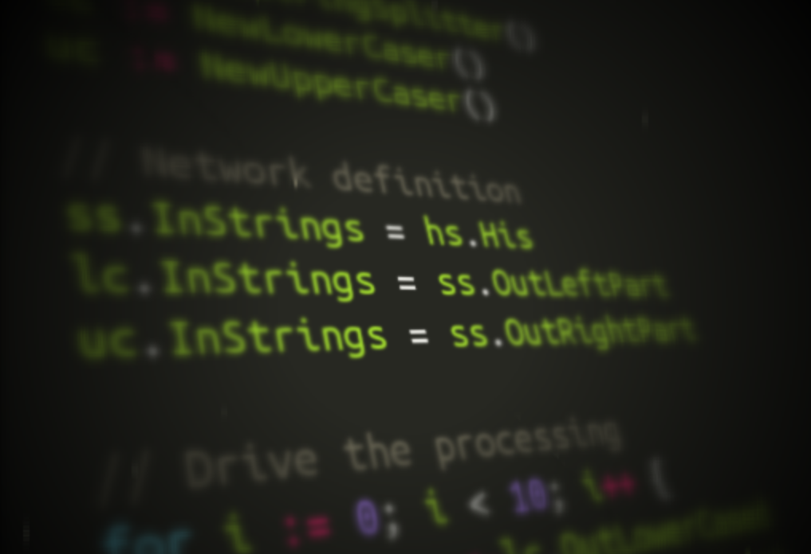

How I would like to write Go programs

Some time ago I got a post published on GopherAcademy , outlining in detail how I think a flow-based programming inspired syntax can strongly help to create clearer, easier-to-maintain, and more declarative Go programs.
These ideas have since became clearer, and we (Ola Spjuth ’s research group at pharmbio ) have successfully used them to make the workflow syntax for Luigi (Spotify’s great workflow engine by Erik Bernhardsson & co) workflows easier, as implemented in the SciLuigi helper library .
I even blogged the other day , about how I think this kind of syntax would help untangle the syntax used in most functional languages. But the final code example in that blog post was a toy example in python, that didn’t work, since python doesn’t have the required concurrent features to make it work.
So, the idea struck me tonight that it might be easy enough to implement the same example in Go, using the most up-to-date ideas for the syntax. One hour later, I have a working Go example!
Find it in this gist , golang play or in the pasted version just below! Watch out especially for those lines connecting the (asynchronous) processes together. That is, these lines:
split.In = hisay.Out
lower.In = split.OutLeft
upper.In = split.OutRight
zippr.In1 = lower.Out
zippr.In2 = upper.Out
prntr.In = zippr.Out
In summary: This is how I want to write composable Go programs! (Especially if I can find a nicer way to drive the network, than a hard-coded for-loop ;) - ideas welcome)
And so the full code example:
package main
import (
"fmt"
"math"
"strings"
)
const (
BUFSIZE = 16
)
// ======= Main =======
func main() {
// Init processes
hisay := NewHiSayer()
split := NewStringSplitter()
lower := NewLowerCaser()
upper := NewUpperCaser()
zippr := NewZipper()
prntr := NewPrinter()
// Network definition *** This is where to look! ***
split.In = hisay.Out
lower.In = split.OutLeft
upper.In = split.OutRight
zippr.In1 = lower.Out
zippr.In2 = upper.Out
prntr.In = zippr.Out
// Set up processes for running (spawn go-routines)
go hisay.Run()
go split.Run()
go lower.Run()
go upper.Run()
go zippr.Run()
prntr.Run()
println("Finished program!")
}
// ======= HiSayer =======
type hiSayer struct {
Out chan string
}
func NewHiSayer() *hiSayer {
return &hiSayer{Out: make(chan string, BUFSIZE)}
}
func (proc *hiSayer) Run() {
defer close(proc.Out)
for _, i := range []int{1, 2, 3, 4, 5, 6, 7, 8, 9, 10} {
proc.Out <- fmt.Sprintf("Hi for the %d:th time!", i)
}
}
// ======= StringSplitter =======
type stringSplitter struct {
In chan string
OutLeft chan string
OutRight chan string
}
func NewStringSplitter() *stringSplitter {
return &stringSplitter{
OutLeft: make(chan string, BUFSIZE),
OutRight: make(chan string, BUFSIZE),
}
}
func (proc *stringSplitter) Run() {
defer close(proc.OutLeft)
defer close(proc.OutRight)
for s := range proc.In {
halfLen := int(math.Floor(float64(len(s)) / float64(2)))
proc.OutLeft <- s[0:halfLen]
proc.OutRight <- s[halfLen:len(s)]
}
}
// ======= LowerCaser =======
type lowerCaser struct {
In chan string
Out chan string
}
func NewLowerCaser() *lowerCaser {
return &lowerCaser{Out: make(chan string, BUFSIZE)}
}
func (proc *lowerCaser) Run() {
defer close(proc.Out)
for s := range proc.In {
proc.Out <- strings.ToLower(s)
}
}
// ======= UpperCaser =======
type upperCaser struct {
In chan string
Out chan string
}
func NewUpperCaser() *upperCaser {
return &upperCaser{Out: make(chan string, BUFSIZE)}
}
func (proc *upperCaser) Run() {
defer close(proc.Out)
for s := range proc.In {
proc.Out <- strings.ToUpper(s)
}
}
// ======= Merger =======
type zipper struct {
In1 chan string
In2 chan string
Out chan string
}
func NewZipper() *zipper {
return &zipper{Out: make(chan string, BUFSIZE)}
}
func (proc *zipper) Run() {
defer close(proc.Out)
for {
s1, ok1 := <-proc.In1
s2, ok2 := <-proc.In2
if !ok1 && !ok2 {
break
}
proc.Out <- fmt.Sprint(s1, s2)
}
}
// ======= Printer =======
type printer struct {
In chan string
}
func NewPrinter() *printer {
return &printer{}
}
func (proc *printer) Run() {
for s := range proc.In {
fmt.Println(s)
}
}
And if we run it, we get:
$ go run dataflow_syntax_test.go
hi for the 1:TH TIME!
hi for the 2:TH TIME!
hi for the 3:TH TIME!
hi for the 4:TH TIME!
hi for the 5:TH TIME!
hi for the 6:TH TIME!
hi for the 7:TH TIME!
hi for the 8:TH TIME!
hi for the 9:TH TIME!
hi for the 10:TH TIME!
Finished program!
- Note I: See also this very interesting discussion on Google+ .
- Note II: … and also this super-interesting discussion on golang-nuts mailing list (See especially the example and mini-FBP-framework suggested by Egon Elbre )
- Note III: For clarity, I should mention that I’m fully aware of Vladimir Sibiroff ’s great GoFlow library, which I’ve been playing with , and the development of which I’m following closely. But I have wanted to see how far one can go without a framework at all, just using an FBP-like pattern and syntax, since I think a few FBP-inspired ideas can benefit also those programs that need to stay away from frameworks for one reason or another. This post presents what I have came up with so far (very much inspired by GoFlow by the way!).
- Note IV (Jul 19, ‘15, 3:49 CET): Have updated the code examples with some of the great suggestions by* Egon Elbre , now allowing to skip the “driving loop”. To demonstrate this more nicely, I have added a “zipper” and “printer” component, that are more suited as terminating processes. See the mailing list thread for more info.
- Edit I: Made code example terser, after feedback from Rolf Lampa .
- Edit II: Added missing channel close statements.
- Edit III: Fix data races introduced by switching channels after ajk go-routine had started reading from it (Spotted by Yann Hodique in this thread , thanks!)
- Edit IV: Defer the channel closeing to avoid prematurely closing channels, as pointed out by Egon Elbre in this thread
- Edit V: A better “driver loop”, using the ok-values from read channels.